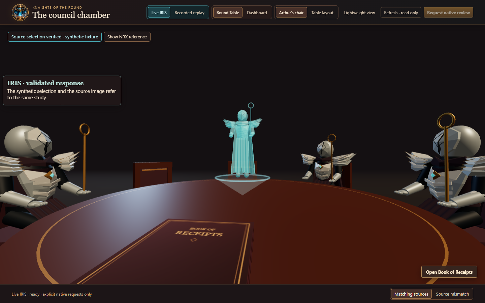
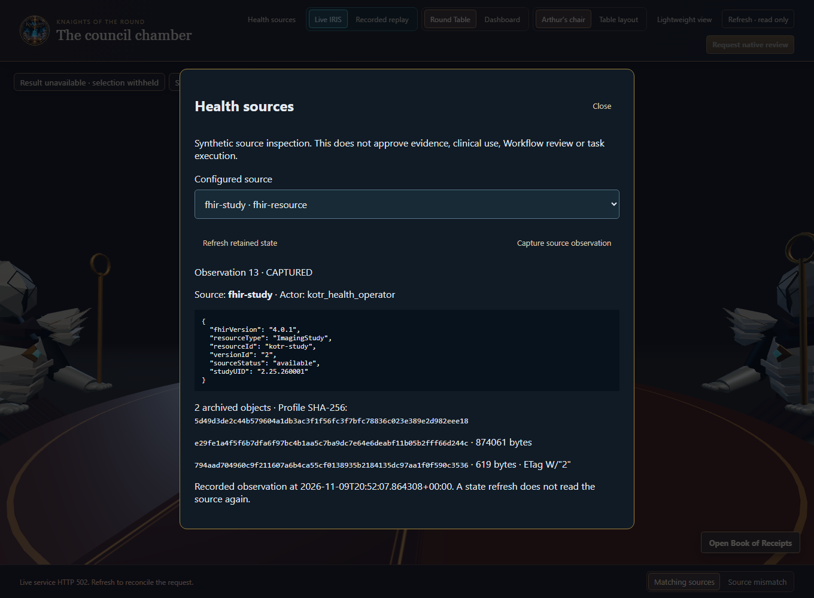
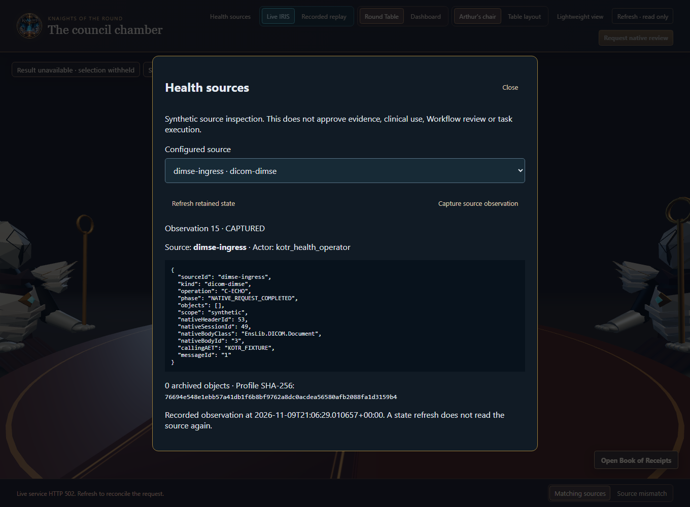
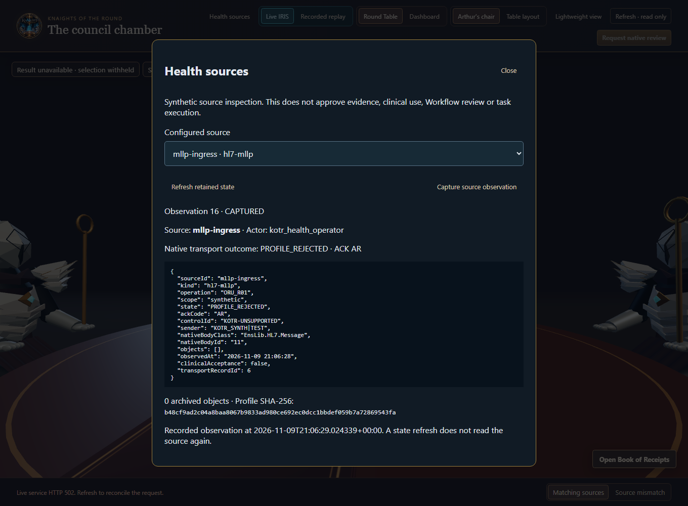
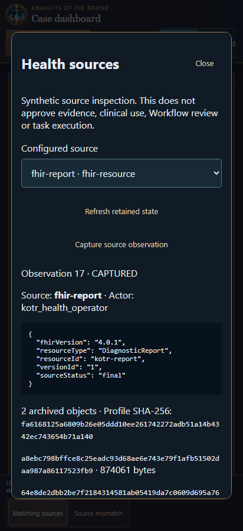

Media gallery
See the Round Table and inspect what IRIS recorded in synthetic health-source tests. Each capture identifies the application state it shows.
Video walkthrough
Watch the matching and conflicting cases, the Book of Receipts, and the dashboard in the public simulation. The cases replay recorded synthetic outcomes. The gallery segment shows retained IRIS source captures from separate tests.
The Round Table

Retained synthetic outcome
Round Table with procedural knights
The actual local Round Table displays a saved matching result supplied by a mock API. No fresh inference took place.

Native source observations
Case inference was intentionally unavailable in this fixture. The background HTTP 502 reflects that unavailable case endpoint. The health-source results came from IRIS.


Native source observation
Authenticated FHIR R4 read
IRIS read a synthetic ImagingStudy at version 2 and retained its ETag. Case inference was unavailable in this fixture.


Native source observation
DICOM Verification
The viewer recovered a native C-ECHO Verification record. This capture covers the verification command.


Native source observation
HL7 MLLP refusal
A synthetic unsupported message profile produced a correlated AR acknowledgment. The transport receipt records the refusal.


Browser emulation
Health sources on a narrow screen
A phone-sized browser displayed an actual synthetic R4 DiagnosticReport observation. This capture establishes the layout at that size.